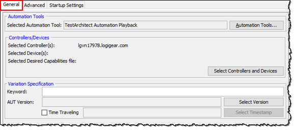

Executing tests from Zephyr
As an alternative to executing tests from TestArchitect, TestArchitect test cases and test modules may be executed from Zephyr.
Important:
TestArchitect-Zephyr integration supports the following
versions of
Zephyr.
Ensure that you have already taken the following steps:
To run automated tests from Zephyr, do as follows:
-
In the dialog box, enter the requested information as described below:
- TestArchitect Information panel:
- Repository Server: Name or IP address of TestArchitect Repository Server holding the repository of the tests.
- Port: Port number of the TestArchitect Repository Server host.
- Repository Name: Name of TestArchitect repository hosting the tests.
- User Name: TestArchitect user name whose account has permission to access and execute tests on the host.
- Password: Password for the above user account.
- General tab:
- Automation
Tools panel: Click the Automation Tools button to set the automation tools (see Lesson #8: Using an automation harness).
The following settings are available for automation tools:
- Playback Tool: Select the automation playback tool.
- Executable(s): Path to the automation playback tool executable file.
- Script(s): Path to the automation script folder.
- Command Line: Add any command line switches you may wish to include to control the third-party tool.
- Controllers/Devices
panel:

- Select Controllers/Devices: Click this
button to designate which controller and device the test
will execute on.
- Lab Manager Server panel: (Display only) IP and port number of the Lab Manager Server to which the test controllers and devices are registered.
- Controllers/Devices panel: Lists all available
controllers and cloud/physical mobile devices on which the test can be
executed. The list consists of those controllers and devices that are either
registered with the Lab Manager Server or have been manually added with the
Add Controller or Add desired capabilities
files button.Tip: To select multiple cloud devices to be executed at launch time, see the following topics.
- WebDriver based cloud services (Appium enabled).
- In Remote TestKit service
- Controller Port Configuration: Use this panel to
specify to TestArchitect the port number that
the remote machine is using for its TestArchitect Controller, if not using the default.
- IP/Server Name: (Display only) IP address of remote machine currently selected in the Controllers/Devices panel.
- Port: Port number through which TestArchitect will attempt to communicate
with the controller on the host specified in the IP/Server
Name field. If this is not the port on which the controller
is known to be listening, change this value and then click
Save
 .
.
Restriction: Only one controller or one physical mobile device may be selected to run tests at a time. In other words, multiple controller/physical mobile device execution is prohibited. - Select Controllers/Devices: Click this
button to designate which controller and device the test
will execute on.
- Variation Specification
panel:

- Keyword: Keyword, or comma-delimited list of keywords, specifying the test variation to be executed, if any. (See Creating keyword variations.)
- AUT Version: Enter a value or click the Select Version button to specify a variation tailored to an AUT version or platform (See Creating linked variations.)
- Time Traveling: To opt for time traveling execution, which selects a historical “snapshot” of the test's project items for execution during the test run, select the check box and provide an appropriate timestamp. (See Time Traveling for details.)
- Automation
Tools panel:
- Advanced tab:
- Export Result(s) to
TARESULT: Select this check box to export TA results
as .TARESULT files.
Note: .TARESULT is an archive extension, developed by LogiGear.
- Include screenshots: Include all captured screenshots in the exported test result.
- Include all sub test results: If the exported test result is a master result, meaning it is a test suite result, or it contains subresults, the Include all sub test results check box is available. With this option chosen, the master result and its subresults are all exported into .TARESULT format.
- Export Result(s) to HTML: Export test
results to HTML file automatically once the text execution is complete (learn more).

- Create folder structure: Select whether the folder
structure or flat structure directory is created to
store HTML results.
- Folder structure (the Create folder structure check box is enabled): TestArchitect creates a hierarchical tree structure, or subdirectories to store HTML results.
- Flat structure (the Create folder structure check box is cleared): TestArchitect does not create subdirectories. There is only a single top-level directory that contains all HTML results.
- Include all sub test results: If the exported test result is a master result, that is, it is a test suite result or it contains subresults, the Include all sub test results check box is available. With this option chosen, the master result and its subresults are all exported into HTML files.
- Apply customized XSLT template: Export HTML results with your own view layout.
- Include screenshots: Retain all captured screenshots in the exported HTML
test result.
- Optimized resolution: Included screenshot's dimensions are optimized to save space in the exported HTML test results. Specifically, the screenshots are saved as thumbnail images.
- Regular resolution: Original resolution of included screenshots is retained. Specifically, the screenshots are saved as full size images.
- Create folder structure: Select whether the folder
structure or flat structure directory is created to
store HTML results.
- Export result(s) to xUnit: Export test
results to a XML file automatically in xUnit-format for integrating into the continuous integration tools once the
text execution is complete.
- Export result(s) to XML
detail: Export test results to XML file
automatically once the text execution is complete (see Exporting test results to XML for more details).

- Automatically add result(s) to
repository: Select this check box if you want to
add test results automatically to the repository once the test
concludes.
- Repository destination: Add test results to the repository at the specified location.
- By result: Limit the results stored
to the repository in accordance with the following check box selections:
- Passed: Passed test results are stored.
- Passed with Warnings/Errors: Passed test results with warnings/errors status are stored.
- Passed with known bug: Test results that passed, but are marked known bugs whose outcomes have been ignored, are stored.
- Failed: Failed test results are stored.
- Not Finished: Incomplete test results.
- Export Result(s) to
TARESULT: Select this check box to export TA results
as .TARESULT files.
- Startup Settings tab:
- Startup Settings: Select this check box to enable user-defined settings and/or reconfigured built-in settings to be loaded at the startup of test automation.
- TestArchitect Information panel:
Important:
- When running an automated test, the execution of every single Zephyr test case entails the execution of the INITIAL section, if any. However, the execution of the last Zephyr test case entails the execution of both the INITIAL and FINAL sections. For example, execution of test case 01 (the first in the sequence) starts off with execution of the INITIAL section; the same is true for each subsequent test case, including test case 05, the last one. Note, however, that only test case 05 concludes with execution of the FINAL section.
- If, in the TestArchitect Execution dialog box, you
specify a non-default test variation (using the
Keyword and/or AUT version
boxes), the results of the variation's test run are uploaded as follows:
- if the variation has been mapped with Zephyr: the results are uploaded to the correct mapped variation.
- if the variation has not been mapped with Zephyr: the results are uploaded to the default test.
Share Via...